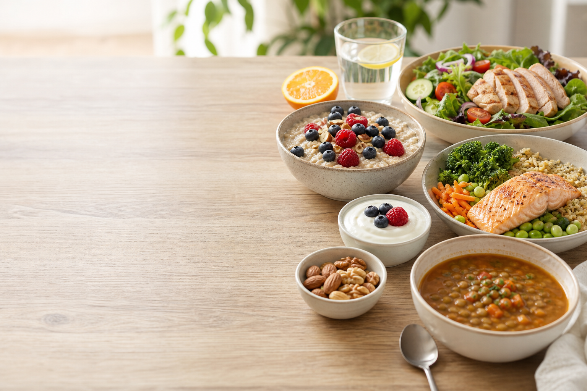

早期照顾恶心和叶酸，中期增加能量与铁，晚期关注钙、蛋白质和消化舒适。

孕期食谱 · 营养计划 · 食物安全
孕期安心食谱
按孕期月份生成早餐、中餐、晚餐和加餐菜单，顺手整理采购清单。
三日重点
铁 + 维 C + 蛋白质
三日备餐用时
55 分钟
营养覆盖
8 项
Food Safety
食物安全速查
Grocery
自动采购清单
Nutrition Notes
设计参考
避开生食、高汞鱼、未消毒乳制品、酒精和李斯特菌高风险冷藏即食食品。
每道菜有时间、营养标签、替换建议和一键加入购物清单。